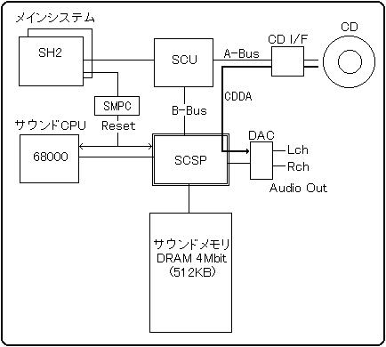
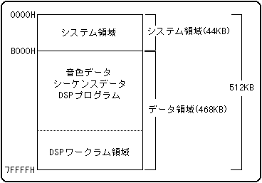

★SOUND Manual
★サウンドドライバプログラマーズガイド
★SOUND Manual
★サウンドドライバプログラマーズガイド
Sound System Hardware

サウンドシステムは音源LSIを中心として、サウンドCPUと512KBのサウンドメモリ、メインシステムとCDインターフェース等が接続されています。メインシステムはSCUを介してサウンドメモリと SCSPのIO空間全てをアクセスすることと、SMPCを通してサウンドCPUの停止（リセット）・再起動（リセット解除）をコントロールすることができます。
この中でも重要なのはサウンドメモリで、サウンドドライバの実行やデータの管理、音源データの格納、システム間の通信等、サウンドシステムの全てがここでコントロールされます。
サウンドドライバは曲や効果音の発音を行うためのサウンドコントロールプログラムです。プログラムはサウンドメモリ上に格納され、メインシステムとは独立に動作します。従って、メインシステムからはコマンドの発行を行うだけで曲や効果音の再生を行うことができます。
サウンドドライバやサウンドデータはいずれもサウンドメモリ上に格納されますので、一度電源を落とすとその全てが消滅してしまいます。従ってメインシステムは、電源投入時には毎回サウンドドライバの起動を行わなければなりません。電源投入時のサウンドCPUはリセット信号によって停止していますので、まずサウンドドライバをサウンドメモリへ転送して、それからリセット信号を解除します。これでサウンドドライバが起動され、曲や効果音の演奏ができるようになります。
サウンドメモリにはシステム領域とデータ領域とがあります。システム領域はサウンドドライバの動作とシステム管理を行うための固定領域で、データ領域は音源データの格納とDSPの内部処理のための可変領域（マッピングが可変）です。
サウンドメモリ

★SOUND Manual
★サウンドドライバプログラマーズガイド